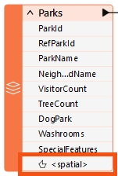
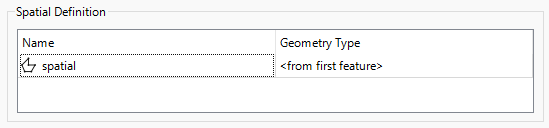
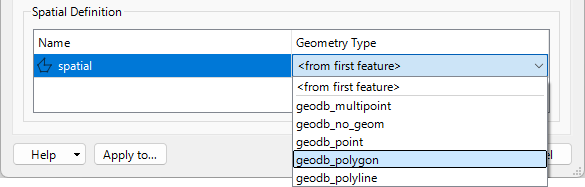
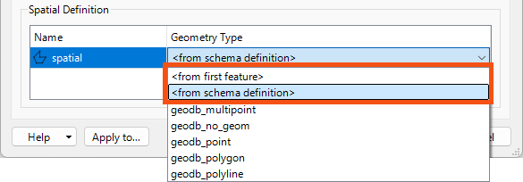

Dynamic Geometry
In this section, we'll examine how you can decide which geometries are valid for a particular feature type.
⭐New for FME 2025.1: geometry is now shown on the canvas under the list of user attributes on expanded feature type and transformer ports:

Additionally, you can view and modify your data's Spatial Definition in feature types' User Attributes tab:

These changes make it easier to view and modify data with multiple geometry definitions.
If you are working with an older version of FME, you can access dynamic geometry parameters on writer feature types' Parameters tab instead.
The geometry permitted in an output dataset depends on the format used. Some formats allow any geometry—or a mix of geometries—to exist in a feature type.
However, some formats do not allow a mix of geometries in a single feature type, which can cause problems.
For example, a standard (static) Geodatabase writer feature type allows you to pick the geometry allowed in that file in the Spatial Definition section of the writer feature type's User Attributes tab:

In a dynamic workspace, this changes. The geometry type can be chosen manually, depending on the first feature, or depending on the chosen schema definition:

In "from schema definition" mode, when the read data provides the schema, the permitted geometry duplicates that source dataset's schema.
But when the Schema Source parameter is changed to point to another dataset, the permitted geometry is defined by that dataset's schema.
If the geometry of the written data is different from that schema and the destination format does not support multiple geometry types, then FME drops features instead of writing them.
Even in a dynamic translation, the workspace author may set the dynamic schema parameter for permitted geometry back to a fixed value. For example, the author could choose geodb_polygon (for a Geodatabase) or shape_polygon (for a Shapefile).
This step overrides the geometry defined by the chosen schema source, so the writer writes only polygon features.
The other option for defining geometry type is "from first feature."
Geometry types can be challenging to handle in a dynamic translation because there is a degree of uncertainty about what geometry types might be in the source data and how well they will match up to the geometry types specified in the source schema. This uncertainty also makes it difficult to set a fixed geometry definition.
The "from first feature" Geometry Type option solves this. When selected, the first feature to arrive at the writer gets to set the geometry type. That way, the author does not need to know in advance what geometry the writer will encounter or what geometry the schema will permit.
For example, if the first feature is a polygon, then the geometry type for that feature type is set to polygon only; the writer will refuse subsequent features destined for the same feature type if they do not have the same polygon geometry.
If you've understood everything about dynamic translations so far without having to read each section at least twice, then you are doing very well. This topic is very advanced; only some understand it the first time.
To summarize, these settings allow us to create an output dataset whose schema is defined not by the source data but in multiple other ways.
Remember this: when faced with schema handling beyond the usual static workspace, you'll know what functionality is required and can refer to the documentation, this course, or the FME Support Center. These resources will help you find the proper techniques for your particular need.
Also, remember this key table:
| I know the format | I don't know the format | ||
| I know the feature types. | Static | Generic + Static | I know the attributes |
| I don't know the feature types | Fanout | Generic + Fanout | I know the attributes |
| I know the feature types | Dynamic | Generic + Dynamic | I don't know the attributes |
| I don't know the feature types | Dynamic | Generic + Dynamic | I don't know the attributes |